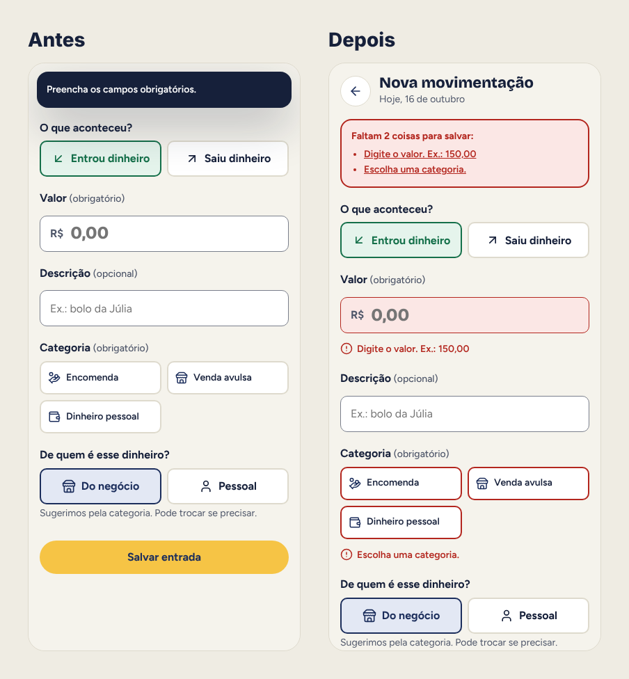
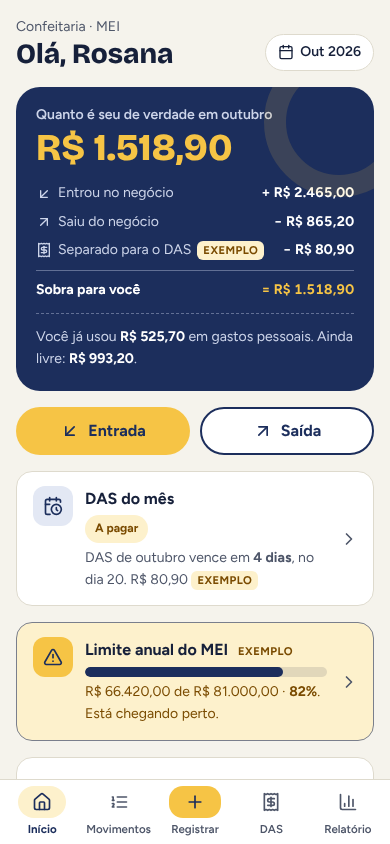
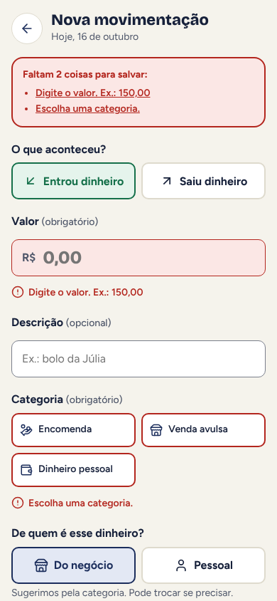
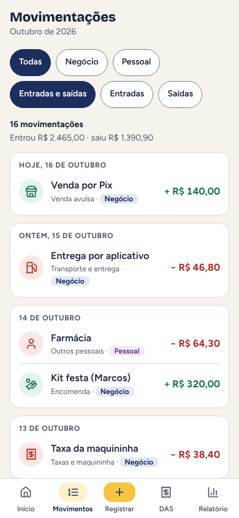
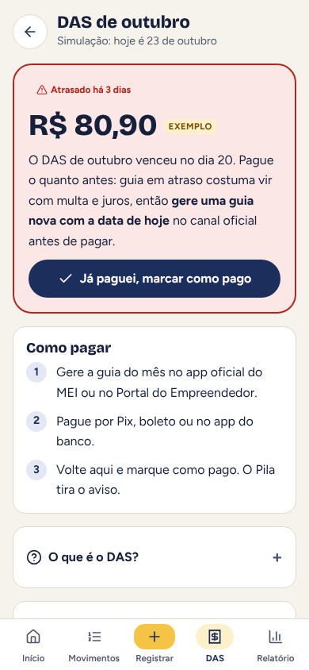
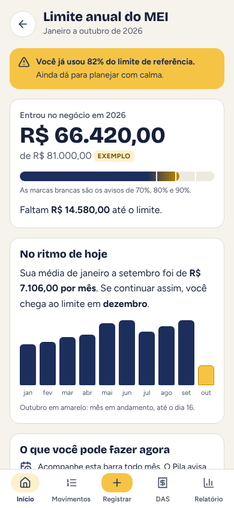

Pila
Um app para quem trabalha por conta própria saber, em uma tela, quanto do dinheiro do mês é de verdade seu, sem precisar entender de contabilidade.

Contexto
Manicure, eletricista, confeiteira, motorista de app: muita gente que trabalha por conta própria recebe o Pix da cliente na mesma conta onde paga o mercado e a luz. No fim do mês sabe o saldo, mas não sabe quanto o trabalho deu de lucro nem quanto pode tirar para si.
Para quem é MEI ainda tem mais duas preocupações: pagar o DAS todo mês até o dia 20 e não passar do limite de faturamento anual. O Pila é um projeto conceitual que fiz sozinho para responder uma pergunta: quanto é seu de verdade este mês? Todos os dados do protótipo são fictícios, e os valores do DAS e do limite aparecem como exemplo, não como valores oficiais.
O dinheiro do trabalho e o da casa caem na mesma conta, e a pessoa não sabe quanto lucrou, esquece o DAS e perde de vista o limite anual do MEI.O problema, em uma frase
Processo
Comecei por um benchmark de cinco produtos conhecidos: Mobills e Organizze (finanças pessoais), o app MEI do governo (canal oficial da guia do DAS), a Conta Azul (gestão para pequenas empresas) e a conta PJ de um banco digital, como Nubank ou Inter. Cada um resolve uma parte, mas nenhum junta o dia a dia do caixa com as obrigações do MEI numa linguagem simples.
Pessoal ou negócio?
Os apps de finanças pessoais tratam tudo como gasto de uma pessoa. No Pila, todo registro responde "de quem é esse dinheiro?", e a categoria já sugere a resposta.
A guia não conversa com o caixa
O canal oficial resolve a emissão do DAS, mas não ajuda a guardar o dinheiro. No Pila, o DAS já sai da conta do "quanto é seu" e tem lembrete antes do dia 20.
Gestão completa assusta
Sistemas de gestão têm muitas telas e termos para quem trabalha sozinho. O Pila tem uma pergunta principal no início e usa palavras do dia a dia, como "entrou" e "saiu".
Com o benchmark, montei uma proto-persona, a Rosana, confeiteira MEI, marcada como hipótese porque não veio de entrevistas. A jornada dela mostrou os momentos de risco: o meio do mês, quando o saldo dá uma falsa tranquilidade, e o dia 20, quando o DAS é esquecido. A partir daí desenhei os fluxos de registrar uma entrada e de pagar o DAS, com todos os estados: vazio, erro, atraso e confirmação.
Avaliei a primeira versão do protótipo com as 10 heurísticas de Nielsen e encontrei 8 problemas, dos quais corrigi 6. Os mais graves eram os valores do DAS e do limite parecerem oficiais, o que resolvi com um selo de "exemplo" em todos eles, e o erro do campo de valor, que aparecia só num aviso que sumia. Editar e excluir movimentações e enviar o relatório ao contador ficaram para a próxima versão.

Solução
A tela inicial mostra o valor que sobra para a pessoa e, logo abaixo, a conta inteira: o que entrou no negócio, o que saiu, o que foi separado para o DAS e a sobra. Registrar uma entrada ou saída leva poucos toques, com teclado numérico e a escolha entre negócio e pessoal já sugerida. A guia do DAS mostra o status do mês, como pagar no canal oficial e um estado de atraso que diz o que fazer agora. A barra do limite anual avisa em 70%, 80% e 90% e mostra quando a pessoa chegaria ao limite no ritmo atual.





Handoff
Para o produto sair do papel, o desenvolvimento precisa de mais do que telas bonitas. Entreguei:
- Cores, tipografia, espaços e raios em tokens, com o contraste de cada par de cor anotado.
- Componente de selo "exemplo" obrigatório em todo valor de DAS e de limite, para nunca parecer valor oficial.
- Regras de validação do valor escritas: obrigatório, maior que zero, vírgula para centavos, e mensagens prontas para cada caso.
- Estados de cada tela documentados: vazio, erro, atraso, pago e confirmação, com fluxos em diagrama.
Resultado
- 9
- telas no protótipo
- 8
- problemas achados na heurística
- 6
- corrigidos
- 5
- produtos no benchmark
O próximo passo é testar com 5 pessoas de atividades diferentes, com tarefas como registrar uma entrada, descobrir quanto pode tirar para si e marcar o DAS como pago. Eu mediria a taxa de sucesso, o tempo para registrar, os erros entre negócio e pessoal e se a pessoa consegue explicar a "sobra" com as próprias palavras.
Aprendizados
- Mostrar a conta gera confiança. Um número sozinho parece mágica; com a conta embaixo, vira algo que a pessoa consegue conferir.
- Valor de exemplo precisa parecer exemplo. Em finanças, um número sem contexto vira verdade. O selo virou parte do sistema.
- Atraso pede caminho, não bronca. A tela de DAS atrasado diz o que fazer agora, em vez de só pintar tudo de vermelho.
Entregas
App para pessoas idosas tomarem os remédios na hora certa, com letra grande e botões enormes, e um familiar acompanhando as doses de longe.